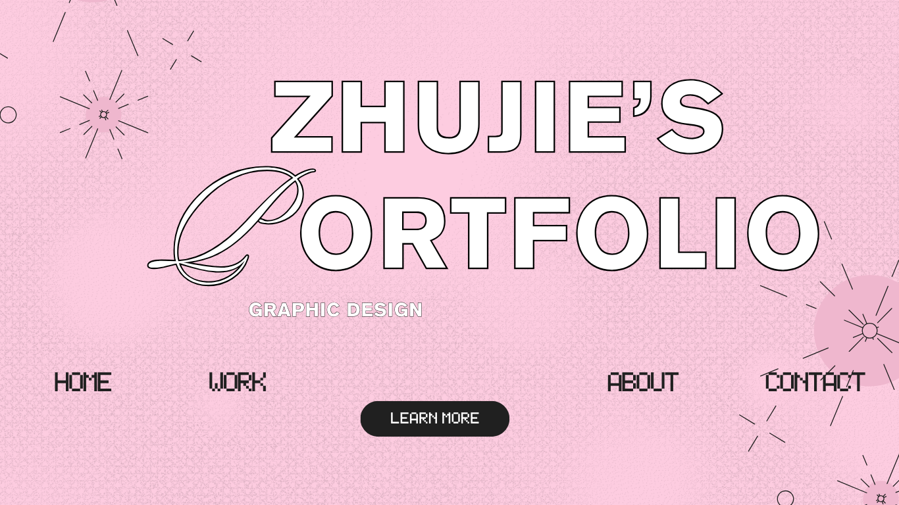

My Professional Practice Portfolio

Hello, I’m zhujie. I’m a graphic design student at PSB Academy. I like poster design because a good design can catch people’s attention and give them new ideas.
I’m learning Adobe Illustrator, Photoshop and Canva. I hope to work in a creative studio after graduating in 2028.
Soft heart. Wild ideas.
My homepage design draft has been added. The other exercises and process notes are still being developed.
Weekly Exercises
About Me
I want my work to feel creative, playful and personal. I am patient and optimistic, and I like having my own ideas. I also want to try different styles instead of following only one.
- Interested in: Poster Design
- Strengths: Creativity, Patience, Optimism
- Brand idea: Soft Chaos
These pages record the exercises for Professional Practice of Graphic and Media Design, Weeks 01–05.